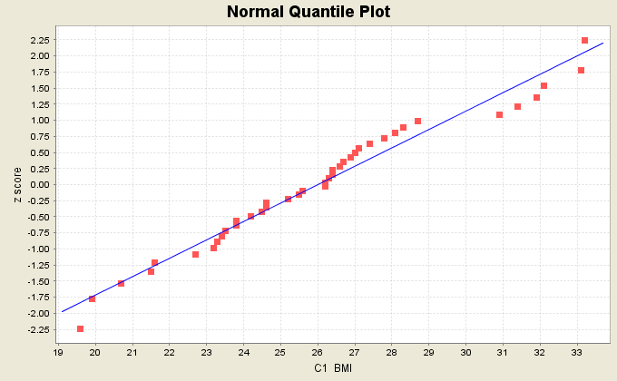

A normal quantile plot is a graph of points (x, y) where sample data values are plotted against their expected z scores in a normal distribution corresponding to their positions with respect to other data values. The expected z scores for the sorted sample data values (in ascending order) are the inverse cumulative normal probabilities of (2i + 1)/(2n), where n is the sample size and i=0..n-1.

The normal quantile plot utility allows the user to specify a column containing the data values. It also provides the options of having a plot title, axis labels, and a regression line. The user can select whether the data values should be used as x or y coordinates and specify the significance for the Ryan-Joiner normality test.